← Índice de los 69 tutes de IDA
Tute 45 · Mona en PRACTICA41b
se conecta con: Vulnerabilidades (defensivo)
INTRODUCCIÓN AL REVERSING CON IDA PRO DESDE CERO PARTE 45.
MONA EN PRACTICA41b.
Volveremos a practicar con el ejercicio PRACTICA41b pero esta vez en el Windbg usando Mona o sea fuera de IDA, por supuesto usamos el que ya tiene el EB FE para que quede loopeando, de cualquier manera esta bueno tenerlo abierto también en el LOADER de IDA sin debuggear para tener claro las cosas.
La idea es ver que info nos da en ambos casos usando Windbg dentro de IDA o usando Windbg fuera de IDA y con mona.
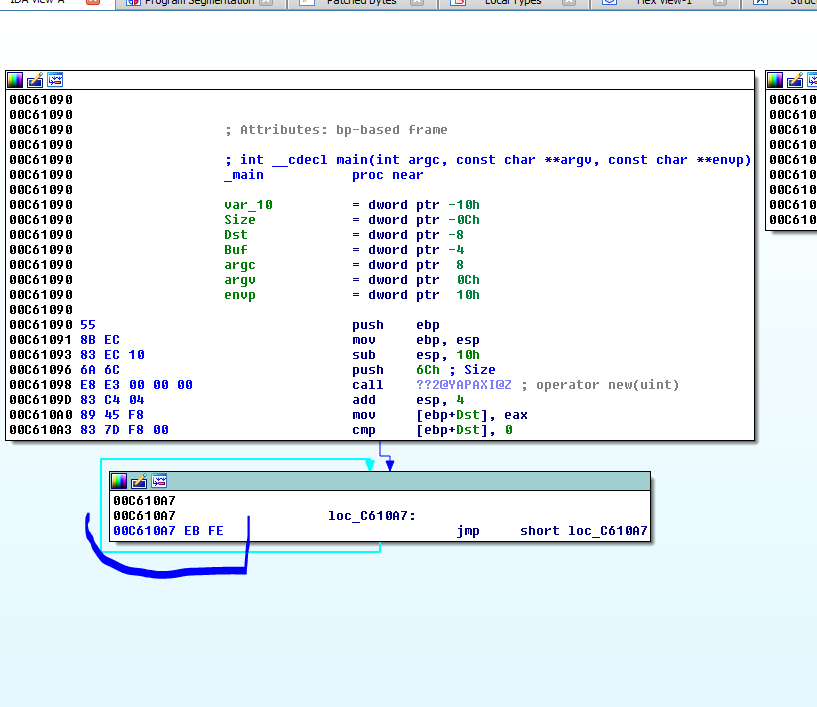
En este caso IDA en el LOADER me muestra la dirección del LOOP INFINITO en mi maquina 0xc610a7 y el comienzo de la sección de código en SEGMENTS.
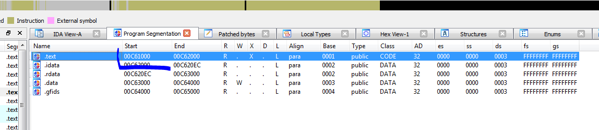
Veo que si hago la resta desde el inicio de la sección de código, el LOOP esta 0xa7 más adelante y desde la imagebase 0xc60000 estará 0x10a7 mas adelante.
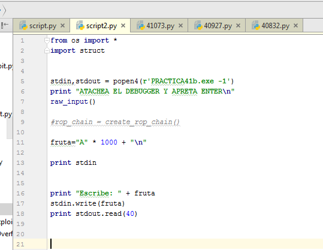
Arranco el script y el proceso quedara loopeando, así que abro el Windbg que ya tiene instalado el Mona, como vimos en las partes anteriores.
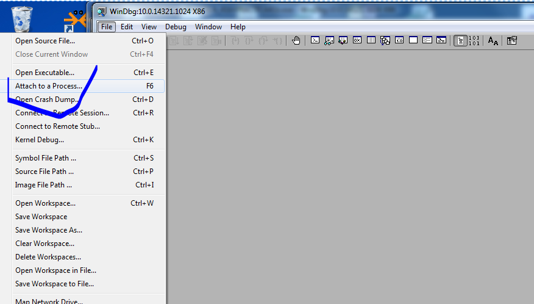
Cuando lo atacheo y para, me fijo la imagebase ya que tiene ASLR el módulo del ejecutable, con lm veo la lista de modulos.
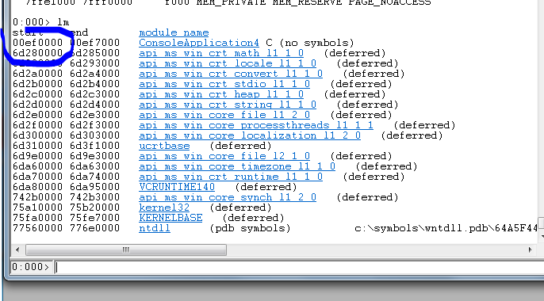
El nombre en este caso me sale el original con que fue compilado.
Si a la imagebase 0xef0000 le sumo 0x10a7 me dará 0xef10a7 que es donde está el JMP.
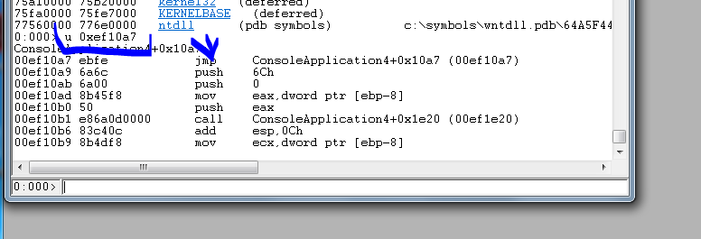
Si quiero que IDA coincida en las direcciones con el proceso que corre en Windbg, voy a
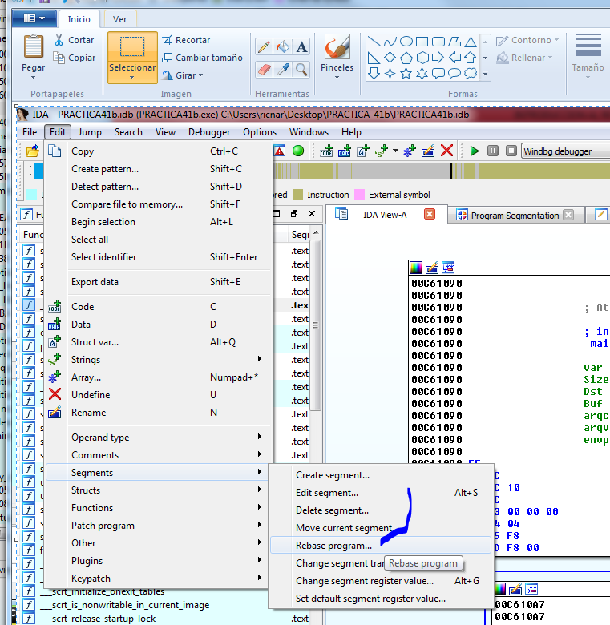
Y pongo la imagebase del proceso que corre en el Windbg era 0xef0000
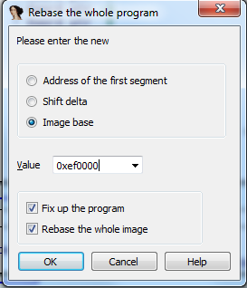
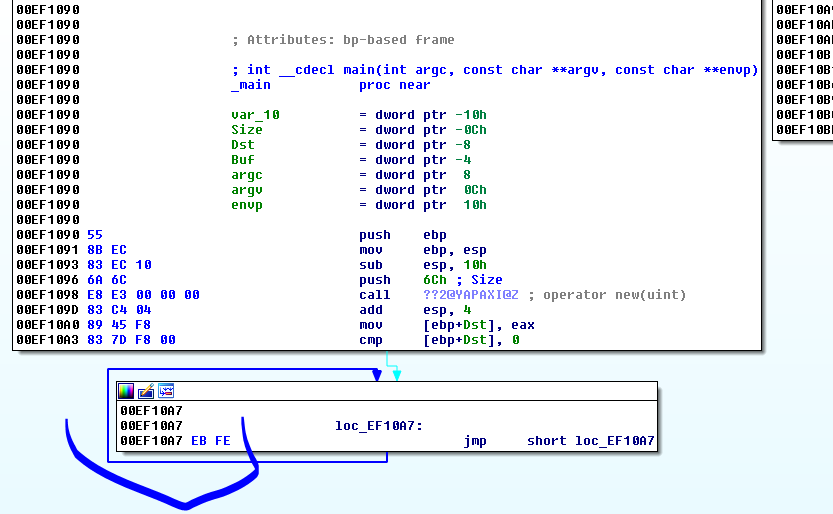
Vemos que coincide con la dirección del proceso en Windbg, obviamente cada vez que lo reinicie cambiara la dirección y deberé repetir el rebase.
Allí veo la instrucción listada le pongo un breakpoint por ejecución con
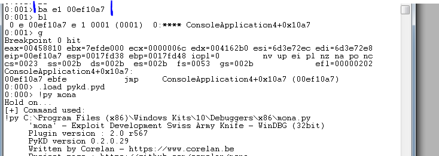
Allí le puse el breakpoint y tipee “g” que es RUN para que corra y paro en el mismo, una vez que paro cargo el mona y uso el comando heap del mismo.
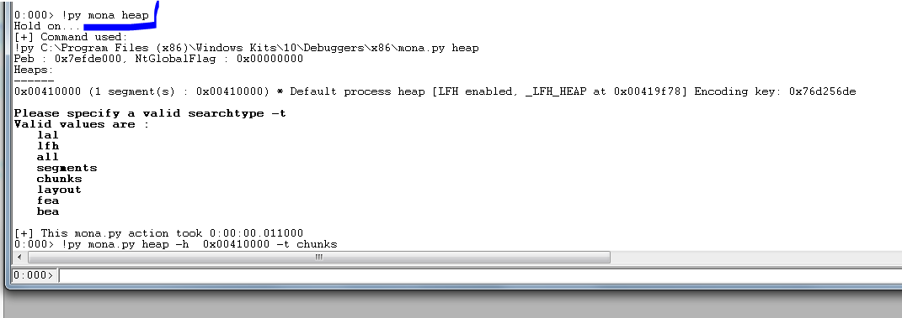
Comparamos con los que nos da el Windbg no hay mucha diferencia, solo me da el mona una de las encoding keys.
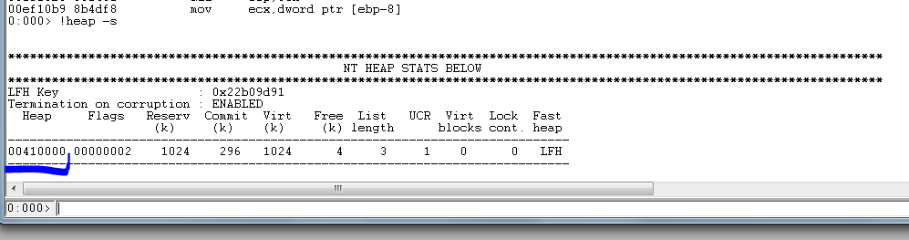
Veamos lo que nos dice el mona sobre los chunks (bloques).
0:000> !py mona.py heap -h 0x00410000 -t chunks
Hold on...
[+] Command used:
!py C:\Program Files (x86)\Windows Kits\10\Debuggers\x86\mona.py heap -h 0x00410000 -t chunks
Peb : 0x7efde000, NtGlobalFlag : 0x00000000
Heaps:
------
0x00410000 (1 segment(s) : 0x00410000) * Default process heap [LFH enabled, _LFH_HEAP at 0x00419f78] Encoding key: 0x76d256de
[+] Preparing output file 'heapchunks.txt'
- (Re)setting logfile heapchunks.txt
[+] Generating module info table, hang on...
- Processing modules
- Done. Let's rock 'n roll.
[+] Processing heap 0x00410000 [LFH]
Segment List for heap 0x00410000:
---------------------------------
Segment 0x00410588 - 0x00510000 (FirstEntry: 0x00410588 - LastValidEntry: 0x00510000): 0x000ffa78 bytes
Nr of chunks : 146
_HEAP_ENTRY psize size unused UserPtr UserSize
00410588 00000 00240 00001 00410590 0000023f (575) (Busy) 004107c8 00240 00020 00008 004107d0 00000018 (24) (Busy) 004107e8 00020 019d0 0000a 004107f0 000019c6 (6598) (Busy) 004121b8 019d0 029e8 0000a 004121c0 000029de (10718) (Busy) 00414ba0 029e8 00048 0000c 00414ba8 0000003c (60) (Busy) 00414be8 00048 00038 00008 00414bf0 00000030 (48) (Busy) 00414c20 00038 00080 00008 00414c28 00000078 (120) (Busy) 00414ca0 00080 00080 00008 00414ca8 00000078 (120) (Busy) 00414d20 00080 00048 0000c 00414d28 0000003c (60) (Busy) 00414d68 00048 00228 00008 00414d70 00000220 (544) (Busy) 00414f90 00228 00050 0000e 00414f98 00000042 (66) (Busy) 00414fe0 00050 00080 00008 00414fe8 00000078 (120) (Busy) 00415060 00080 00018 00008 00415068 00000010 (16) (Busy) 00415078 00018 00050 0000a 00415080 00000046 (70) (Busy) 004150c8 00050 00080 00008 004150d0 00000078 (120) (Busy) 00415148 00080 00018 00008 00415150 00000010 (16) (Busy) 00415160 00018 00018 00008 00415168 00000010 (16) (Busy) 00415178 00018 00040 0000b 00415180 00000035 (53) (Busy) 004151b8 00040 00070 0000c 004151c0 00000064 (100) (Busy) 00415228 00070 00208 00008 00415230 00000200 (512) (Busy) 00415430 00208 00208 00008 00415438 00000200 (512) (Busy) 00415638 00208 00030 0000c 00415640 00000024 (36) (Busy) 00415668 00030 00030 0000c 00415670 00000024 (36) (Busy) 00415698 00030 00038 00008 004156a0 00000030 (48) (Busy) 004156d0 00038 00028 00008 004156d8 00000020 (32) (Busy) 004156f8 00028 00028 00008 00415700 00000020 (32) (Busy) 00415720 00028 00028 00008 00415728 00000020 (32) (Busy) 00415748 00028 00028 00008 00415750 00000020 (32) (Busy) 00415770 00028 00018 00008 00415778 00000010 (16) (Busy) 00415788 00018 00080 00008 00415790 00000078 (120) (Busy) 00415808 00080 00080 00008 00415810 00000078 (120) (Busy) 00415888 00080 00018 00008 00415890 00000010 (16) (Busy) 004158a0 00018 00020 0000c 004158a8 00000014 (20) (Busy) 004158c0 00020 00020 00010 004158c8 00000010 (16) (Busy) 004158e0 00020 00078 0000c 004158e8 0000006c (108) (Busy) 00415958 00078 00080 00008 00415960 00000078 (120) (Busy) 004159d8 00080 00018 00008 004159e0 00000010 (16) (Busy) 004159f0 00018 00018 00008 004159f8 00000010 (16) (Busy) 00415a08 00018 00050 0000e 00415a10 00000042 (66) (Busy) 00415a58 00050 00010 00000 00415a60 00000010 (16) (Free) 00415a68 00010 00058 0000e 00415a70 0000004a (74) (Busy) 00415ac0 00058 00080 00008 00415ac8 00000078 (120) (Busy) 00415b40 00080 00080 00008 00415b48 00000078 (120) (Busy) 00415bc0 00080 00018 00008 00415bc8 00000010 (16) (Busy) 00415bd8 00018 00020 00010 00415be0 00000010 (16) (Busy) 00415bf8 00020 00018 00008 00415c00 00000010 (16) (Busy) 00415c10 00018 00010 00000 00415c18 00000010 (16) (Free) 00415c20 00010 00080 00008 00415c28 00000078 (120) (Busy) 00415ca0 00080 00080 00008 00415ca8 00000078 (120) (Busy) 00415d20 00080 00088 0000c 00415d28 0000007c (124) (Busy) 00415da8 00088 00018 00008 00415db0 00000010 (16) (Busy) 00415dc0 00018 00078 00008 00415dc8 00000070 (112) (Busy) 00415e38 00078 00020 00010 00415e40 00000010 (16) (Busy) 00415e58 00020 00018 00008 00415e60 00000010 (16) (Busy) 00415e70 00018 00080 00008 00415e78 00000078 (120) (Busy) 00415ef0 00080 00018 00008 00415ef8 00000010 (16) (Busy) 00415f08 00018 00018 00008 00415f10 00000010 (16) (Busy) 00415f20 00018 00020 00010 00415f28 00000010 (16) (Busy) 00415f40 00020 00070 00008 00415f48 00000068 (104) (Busy) 00415fb0 00070 00080 00008 00415fb8 00000078 (120) (Busy) 00416030 00080 00018 00008 00416038 00000010 (16) (Busy) 00416048 00018 00028 00008 00416050 00000020 (32) (Busy) 00416070 00028 00080 00008 00416078 00000078 (120) (Busy) 004160f0 00080 00028 00008 004160f8 00000020 (32) (Busy) 00416118 00028 00028 00008 00416120 00000020 (32) (Busy) 00416140 00028 00070 00008 00416148 00000068 (104) (Busy) 004161b0 00070 00028 00008 004161b8 00000020 (32) (Busy) 004161d8 00028 00078 0000e 004161e0 0000006a (106) (Busy) 00416250 00078 03d20 00001 00416258 00003d1f (15647) (Busy) 00419f70 03d20 378b0 00008 00419f90 000378a8 (227496) (Internal,Busy (LFH)) 00451820 378b0 00400 00008 00451840 000003f8 (1016) (Internal,Busy (LFH)) 00451c20 00400 00400 00008 00451c40 000003f8 (1016) (Internal,Busy (LFH)) 00452020 00400 00080 00008 00452028 00000078 (120) (Busy) 004520a0 00080 00080 00008 004520a8 00000078 (120) (Busy) 00452120 00080 00028 00008 00452128 00000020 (32) (Busy) 00452148 00028 00028 00008 00452150 00000020 (32) (Busy) 00452170 00028 00070 0000a 00452178 00000066 (102) (Busy) 004521e0 00070 00080 00008 004521e8 00000078 (120) (Busy) 00452260 00080 00028 00008 00452268 00000020 (32) (Busy) 00452288 00028 00028 00008 00452290 00000020 (32) (Busy) 004522b0 00028 00070 00008 004522b8 00000068 (104) (Busy) 00452320 00070 00078 0000e 00452328 0000006a (106) (Busy) 00452398 00078 00210 00008 004523a0 00000208 (520) (Busy) 004525a8 00210 00028 00008 004525b0 00000020 (32) (Busy) 004525d0 00028 00028 00008 004525d8 00000020 (32) (Busy) 004525f8 00028 00028 00008 00452600 00000020 (32) (Busy) 00452620 00028 00028 00008 00452628 00000020 (32) (Busy) 00452648 00028 00028 00008 00452650 00000020 (32) (Busy) 00452670 00028 00028 00008 00452678 00000020 (32) (Busy) 00452698 00028 00078 0000c 004526a0 0000006c (108) (Busy) 00452710 00078 02000 00008 00452730 00001ff8 (8184) (Internal,Busy (LFH)) 00454710 02000 00070 0000a 00454718 00000066 (102) (Busy) 00454780 00070 00078 0000e 00454788 0000006a (106) (Busy) 004547f8 00078 00408 00008 00454800 00000400 (1024) (Busy) 00454c00 00408 00800 00008 00454c20 000007f8 (2040) (Internal,Busy (LFH)) 00455400 00800 006d0 00008 00455408 000006c8 (1736) (Busy) 00455ad0 006d0 00c08 00008 00455ad8 00000c00 (3072) (Busy) 004566d8 00c08 00800 00008 004566f8 000007f8 (2040) (Internal,Busy (LFH)) 00456ed8 00800 00228 00008 00456ee0 00000220 (544) (Busy) 00457100 00228 00228 00008 00457108 00000220 (544) (Busy) 00457328 00228 004c0 00008 00457330 000004b8 (1208) (Busy) 004577e8 004c0 00038 0000f 004577f0 00000029 (41) (Busy) 00457820 00038 00098 0000d 00457828 0000008b (139) (Busy) 004578b8 00098 00020 00009 004578c0 00000017 (23) (Busy) 004578d8 00020 00020 00008 004578e0 00000018 (24) (Busy) 004578f8 00020 00030 0000f 00457900 00000021 (33) (Busy) 00457928 00030 00020 0000c 00457930 00000014 (20) (Busy) 00457948 00020 00020 0000a 00457950 00000016 (22) (Busy) 00457968 00020 00030 00008 00457970 00000028 (40) (Busy) 00457998 00030 00030 00009 004579a0 00000027 (39) (Busy) 004579c8 00030 00060 0000e 004579d0 00000052 (82) (Busy) 00457a28 00060 00048 00008 00457a30 00000040 (64) (Busy) 00457a70 00048 00020 0000e 00457a78 00000012 (18) (Busy) 00457a90 00020 00058 0000e 00457a98 0000004a (74) (Busy) 00457ae8 00058 00808 00008 00457af0 00000800 (2048) (Busy) 004582f0 00808 00088 00008 004582f8 00000080 (128) (Busy) 00458378 00088 00048 0000b 00458380 0000003d (61) (Busy) 004583c0 00048 00448 00008 004583c8 00000440 (1088) (Busy) 00458808 00448 00078 0000c 00458810 0000006c (108) (Busy) 00458880 00078 01168 00000 00458888 00001168 (4456) (Free) 004599e8 01168 000f0 0000c 004599f0 000000e4 (228) (Busy) 00459ad8 000f0 00038 0000a 00459ae0 0000002e (46) (Busy) 00459b10 00038 00030 00008 00459b18 00000028 (40) (Busy) 00459b40 00030 00040 00009 00459b48 00000037 (55) (Busy) 00459b80 00040 00048 0000c 00459b88 0000003c (60) (Busy) 00459bc8 00048 00040 0000f 00459bd0 00000031 (49) (Busy) 00459c08 00040 00030 0000c 00459c10 00000024 (36) (Busy) 00459c38 00030 00020 00009 00459c40 00000017 (23) (Busy) 00459c58 00020 00040 0000e 00459c60 00000032 (50) (Busy) 00459c98 00040 00038 0000a 00459ca0 0000002e (46) (Busy) 00459cd0 00038 00038 0000c 00459cd8 0000002c (44) (Busy) 00459d08 00038 00030 00008 00459d10 00000028 (40) (Busy) 00459d38 00030 00030 0000f 00459d40 00000021 (33) (Busy) 00459d68 00030 00020 0000b 00459d70 00000015 (21) (Busy) 00459d88 00020 00038 0000d 00459d90 0000002b (43) (Busy) 00459dc0 00038 00030 0000e 00459dc8 00000022 (34) (Busy) 00459df0 00030 00038 0000a 00459df8 0000002e (46) (Busy) 00459e28 00038 00048 0000f 00459e30 00000039 (57) (Busy) 00459e70 00048 00020 00009 00459e78 00000017 (23) (Busy) 00459e90 00020 00040 0000a 00459e98 00000036 (54) (Busy) 00459ed0 00040 00050 00009 00459ed8 00000047 (71) (Busy) 00459f20 00050 00050 00008 00459f28 00000048 (72) (Busy) 00459f70 00050 00020 0000e 00459f78 00000012 (18) (Busy) 00459f90 00020 00020 00008 00459f98 00000018 (24) (Busy) 00459fb0 00020 00030 0000c 00459fb8 00000024 (36) (Busy) 00459fe0 00030 00020 00003 00459fe8 0000001d (29) (Busy)
0x00459ff8 - 0x00510000 (end of segment) : 0xb6008 (745480) uncommitted bytes
Heap : 0x00410000 [LFH] : VirtualAllocdBlocks : 0
Nr of chunks : 0
[+] This mona.py action took 0:00:05.043000
Recordamos que en este punto EAX tenía la dirección de usuario del bloque (sin el header)
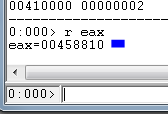
Si buscamos por 4588 ya que en los listados siempre está por la dirección que incluye el header.
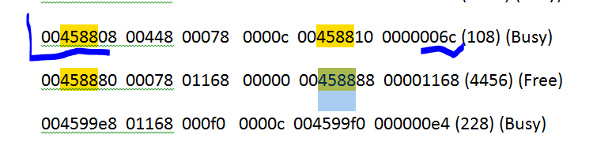
Allí vemos el bloque BUSY el user size 0x6c y el size total 0x78 o sea 120 decimal, si lo hacíamos con el Windbg usando !heap -a 0x00410000.
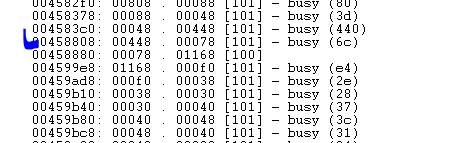
Vemos que la información es parecida.
Como antes en el Windbg vemos la información del bloque
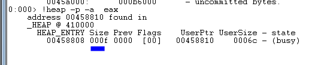
El size se multiplicaba por 8 para ver el total
hex(0xf *0x8)
'0x78' o sea 120 decimal.
En el mona
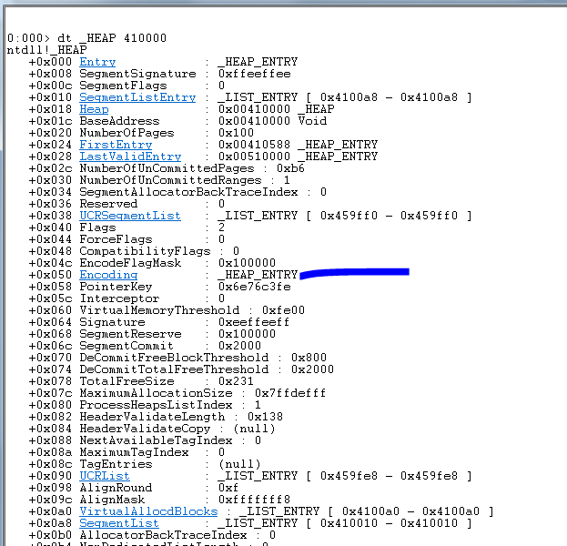
Como siempre en la posición 0x50 están las claves para xorear, veamoslas.
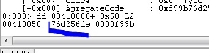
Vemos que una de las dos claves coincide con la que muestra el mona.
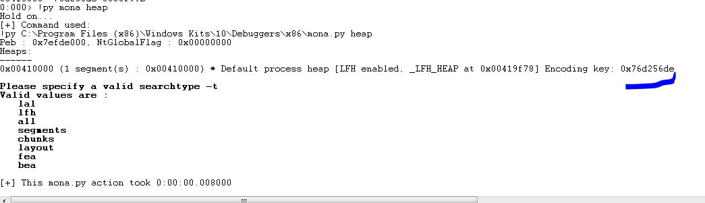
Tenemos un comando en mona que no conozco si lo tiene el Windbg
!py mona heap -t layout -v
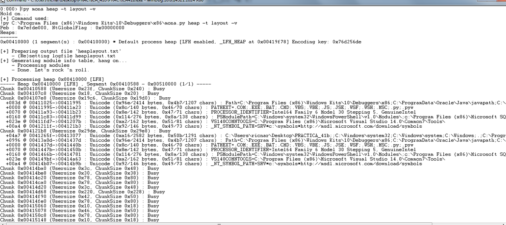
La salida es larguísima pero trata de ver en que usa los bloques del heap y listarlo.
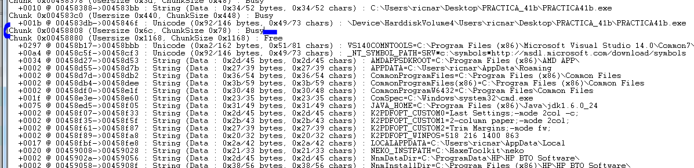
Ahí está nuestro bloque.
Si miro el contenido de alguno de los otros.
0:000> da 00458d27
00458d27 "AMDAPPSDKROOT=C:\Program Files ("…..
Vemos que el contenido es el mismo que muestra el listado.
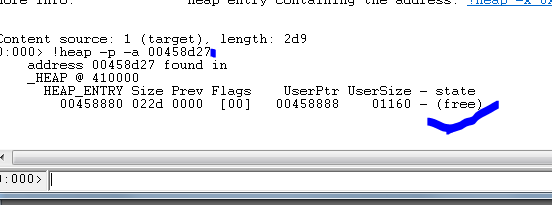
Vemos que los datos coinciden esta free o sea se guardó info allí, pero se liberó el bloque para nuevo uso.
En este caso no, pero hay que prestar siempre atención a los objetos allocados, pues los mismos tienen vtables que son tablas virtuales que se pueden pisar y que podrían hacernos saltar a controlar la ejecución.
Este es un ejemplo de la web para que vean como se ve allí dice OBJECT y VFTABLE, un buen objetivo para pisar si hay un overflow.
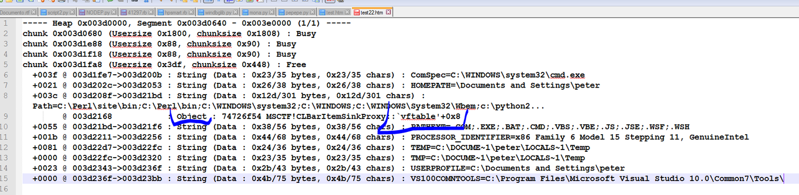
En el IDA podemos ver los bytes que habíamos cambiado para poner el loop infinito con EDIT-PATCHED BYTES.
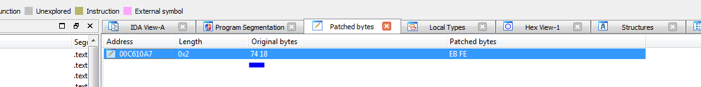
En el Windbg en la pestaña memory voy a la dirección donde está el EB FE y los cambio por 74 18.
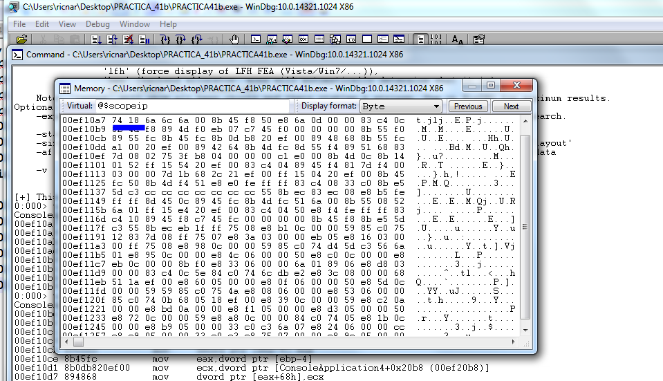
Si ahora hago u eip veo que cambio al salto condicional que había.
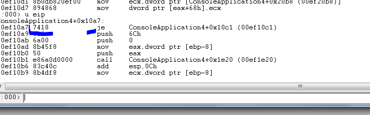
Puedo darle run o G y aceptar el enter del script y que siga hasta que crashee, sabemos que no está puesto el page heap como full por lo que no hay history ni crasheara al escribir, solo crasheara al saltar a ejecutar.
Igual tuve que volverlo a tirar porque tuve que reiniciar la máquina, llegare a lo mismo que antes aunque las direcciones variaran.
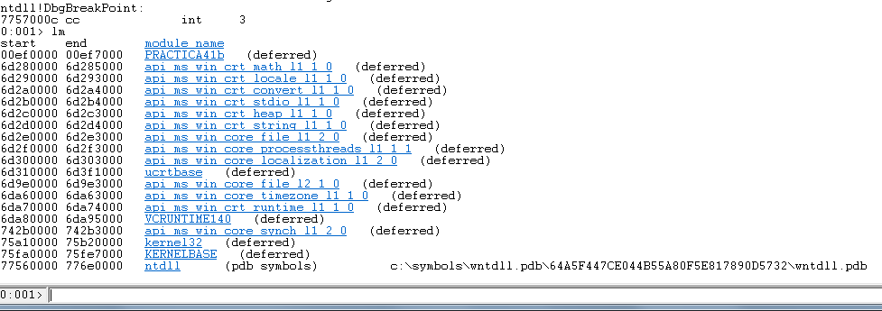
Esta vez sí apareció el nombre jeje.
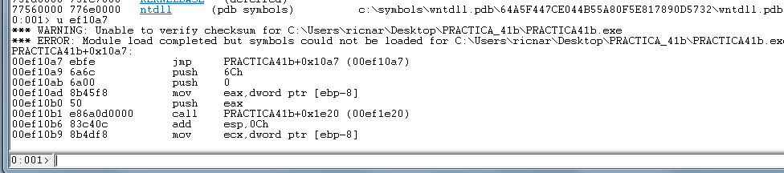
Veo el heap con el mona.
0:000> !py mona heap -a
Hold on...
[+] Command used:
!py C:\Program Files (x86)\Windows Kits\10\Debuggers\x86\mona.py heap -a
Peb : 0x7efde000, NtGlobalFlag : 0x00000000
Heaps:
------
0x004f0000 (1 segment(s) : 0x004f0000) * Default process heap [LFH enabled, _LFH_HEAP at 0x004fb348] Encoding key: 0x13f60872
Y veo los bloques
!py mona.py heap -h 0x004f0000 -t chunks
Y EAX vale
0:000> r eax
EAX=0053a720
Así que el bloque es ahora
0053a718 00448 00078 0000c 0053a720 0000006c (108) (Busy) 0053a790 00078 01728 00000 0053a798 00001728 (5928) (Free) 0053beb8 01728 00128 00014 0053bec0 00000114 (276) (Busy) 0053bfe0 00128 00020 00003 0053bfe8 0000001d (29) (Busy)
Cambio el loop infinito por el salto condicional.
00ef10a7 7418 je PRACTICA41b+0x10c1 (00ef10c1)
Aprieto G y luego el ENTER del script para que continúe.
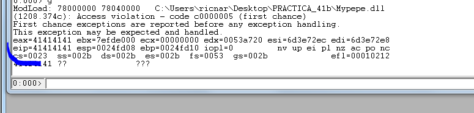
Salto a ejecutar veamos que nos dice sobre el bloque
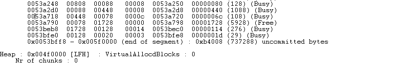
Lo mismo veamos el layout.
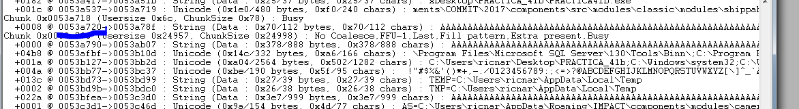
Vemos que nos muestra el bloque lleno de Aes y el siguiente también con Aes, el Windbg me muestra el bloque siguiente con size 0x4141 ya se ve corrupto el size.
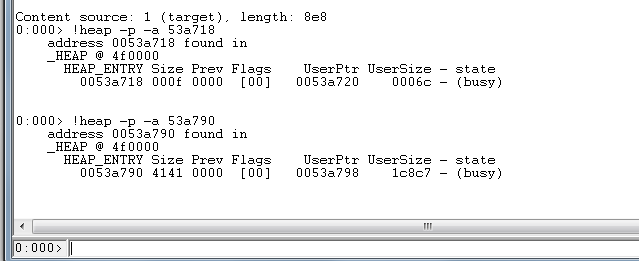
Si usamos –x Windbg nos dirá si esta corrupto .
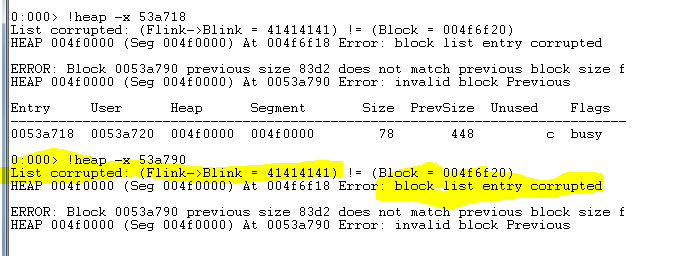
Bueno vemos que el Windbg nos da mucha información, el mona un poco más, tiene algunos comandos para trabajar con objetos que aún no los podemos usar, igualmente todo esto nos servirá para practicar y solucionar el ejercicio pendiente de la parte 44, lo veremos en la próxima parte.
Hasta la parte 46
Ricardo Narvaja